Details from your references.
The yacht's boarding areas and open terraces, refined from the photographs and video you supplied.
Before and after views use matching cameras, lighting, image sizes and anti-aliasing. These are generated model renders; local component measurements and hidden finishes remain estimates.
Upper aft terrace
The barbecue stays starboard; the covered island and coffee table occupy the centre, with the port stair opening clear.
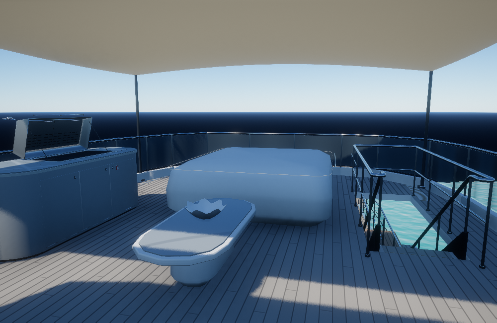
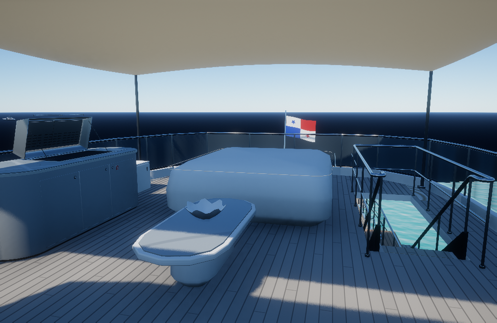
Stern identification
Serif lettering and a sun-and-wave emblem follow the retained port hull surface.
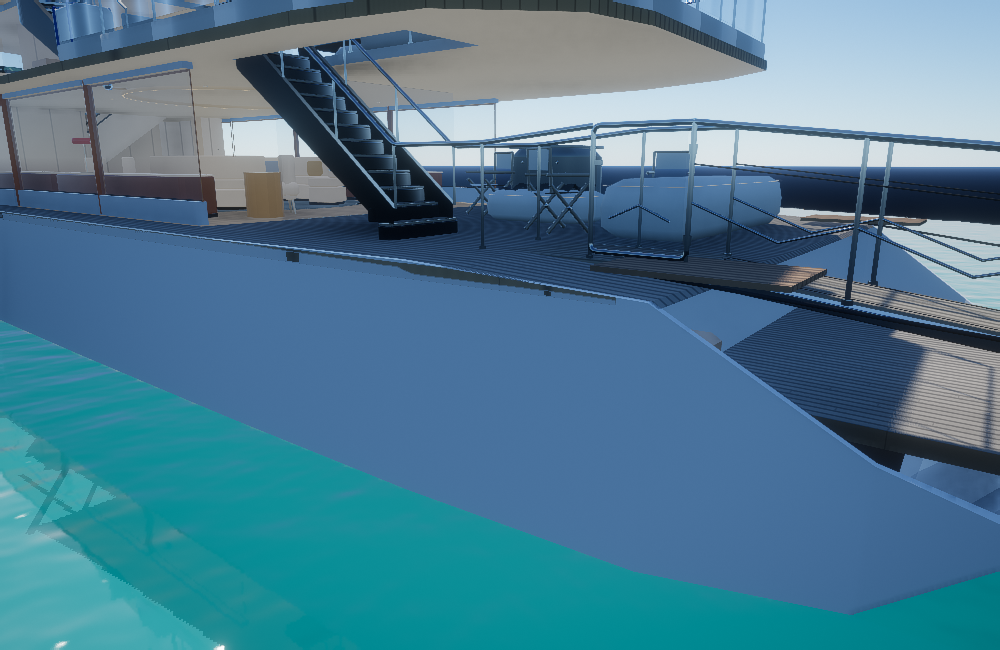
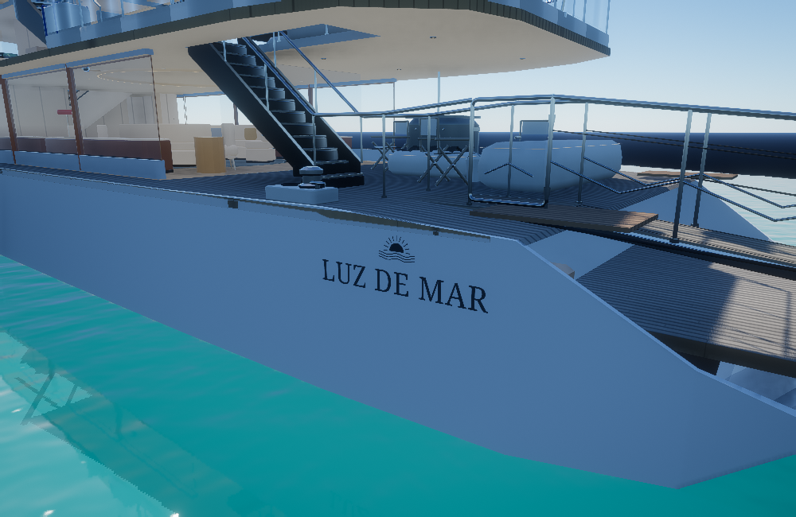
Stern flag
The quartered Panama flag, coloured stars and inclined pole complete the aft rail.
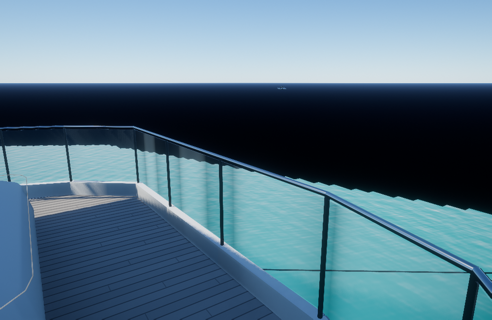
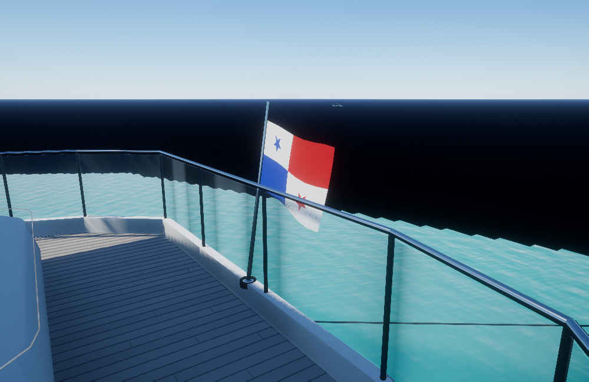
Port mooring station
A supported polished capstan, cleat and coiled line sit beside the shoes at the port stair.
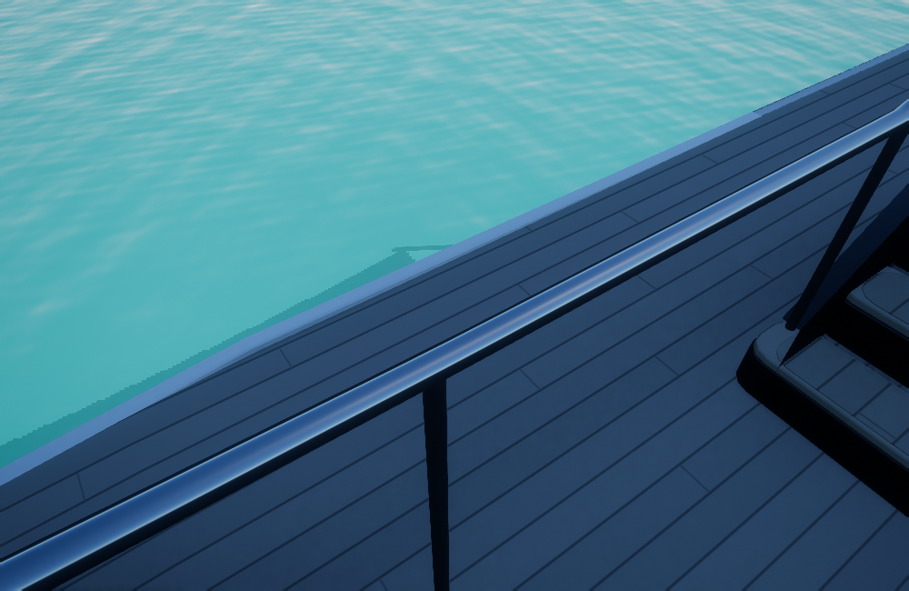
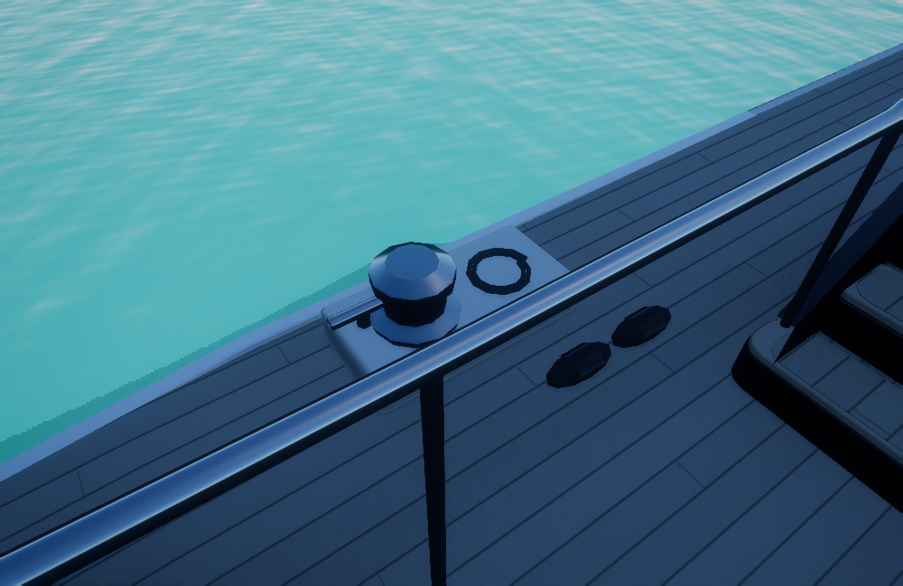
Main cockpit wet bar
The solid counter is replaced with an open sink and recessed basin, with the polished support above.
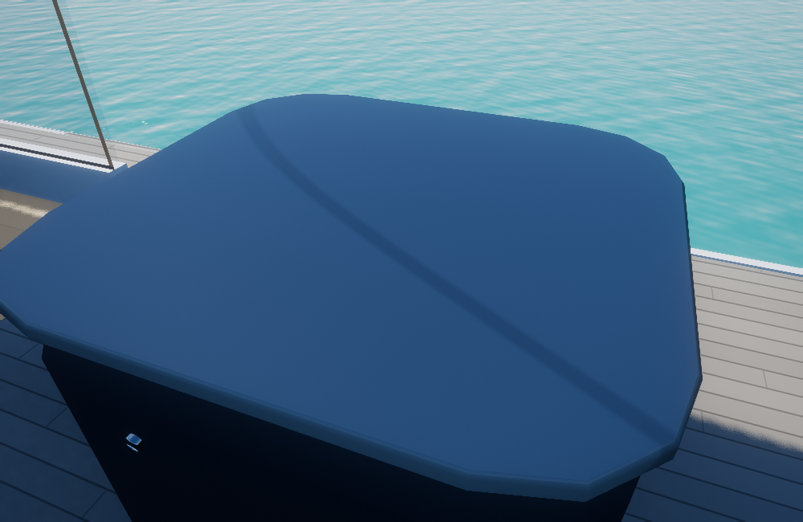
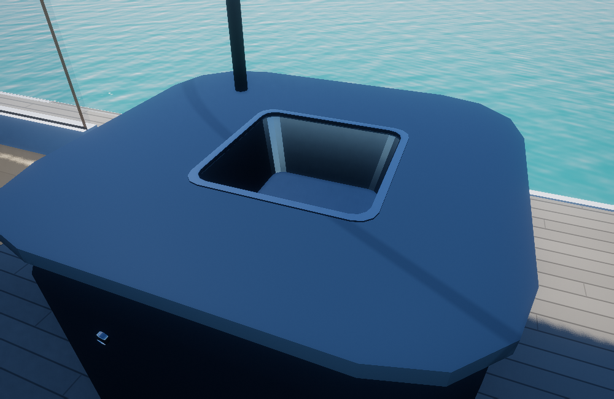
Cockpit utility bucket
The open white bucket and handle sit beside the covered furnishing; its small coloured badge is approximate.
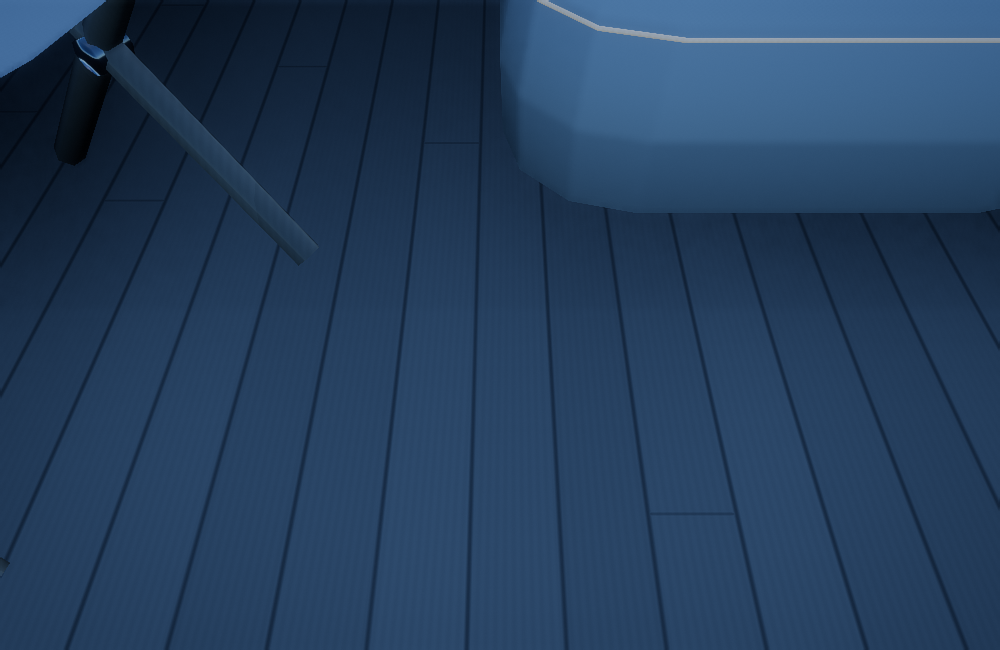
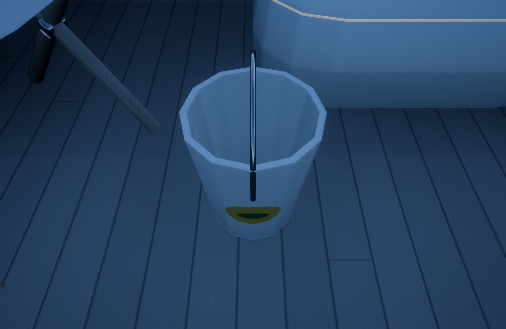
Separate upper storage
The covered box aft of the barbecue remains separate from the blue-strapped port-side case.
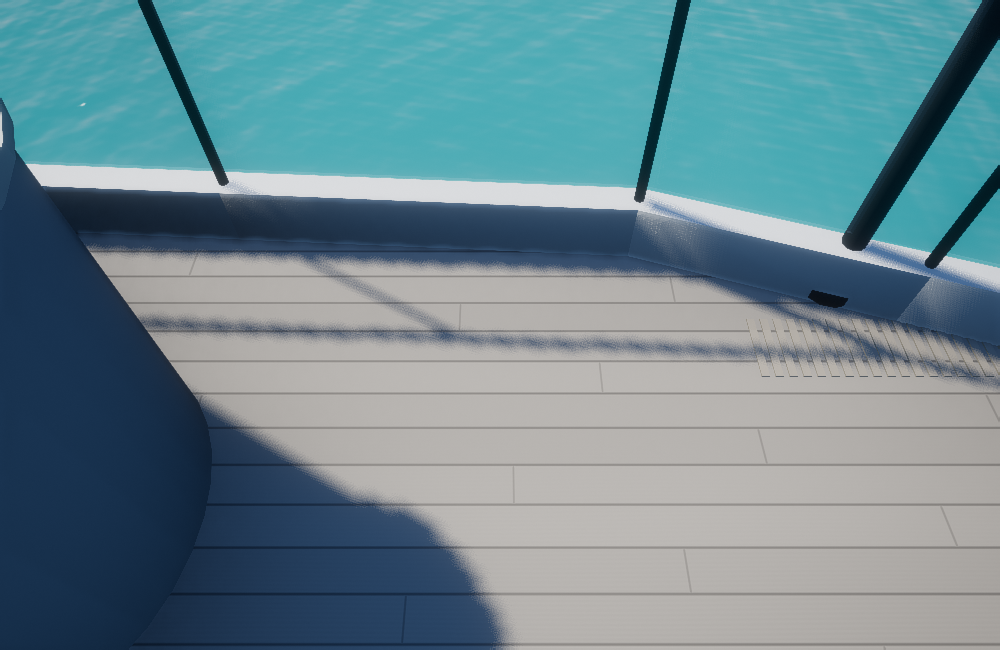
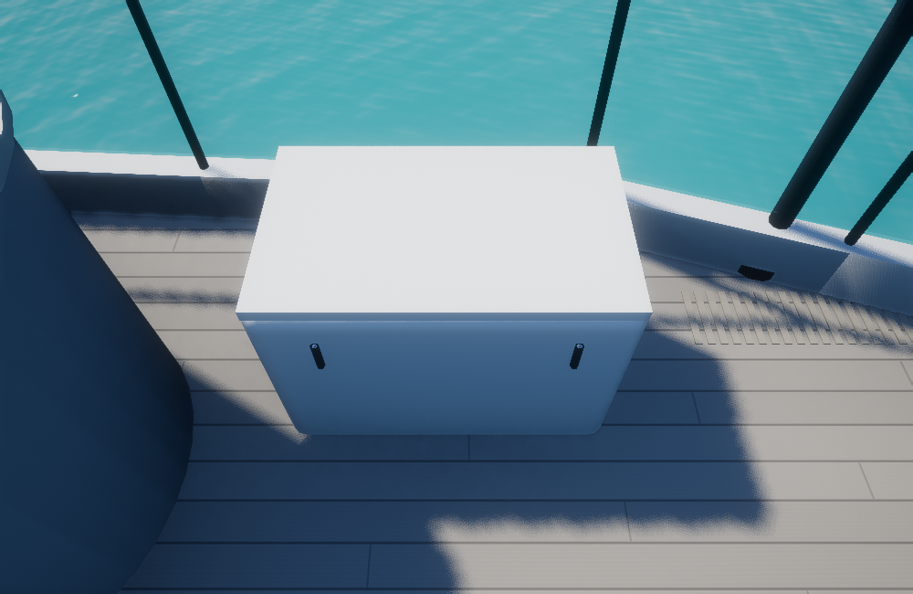
Aft cockpit
Three folding chairs and the covered forms preserve the visible survey arrangement and the boarding route.
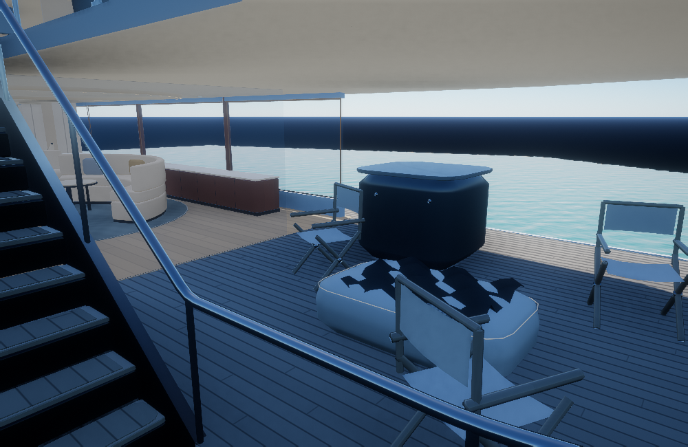
Portrait view
The same model, materials and lighting in a narrow view.
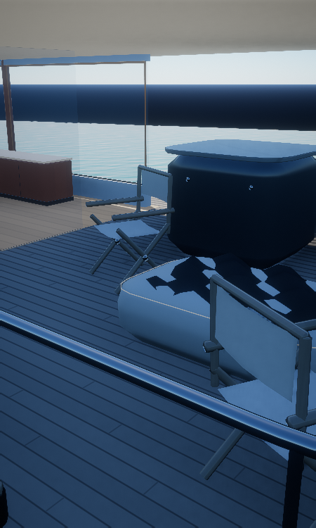